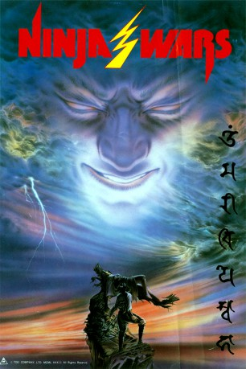

#7143 Ninja Wars
 
 IMDB-Wertung: 5.7 / 10
IMDB-Wertung: 5.7 / 10  Metascore: 0
Metascore: 0 
Wer auch immer die attraktive Lady Ukyo (Noriko Watanabe) ehelicht, soll angeblich zum allmächtigen Herrscher aufsteigen. Um Ukyo für sich zu gewinnen, verbündet sich der machthungrige Donjo (Akira Nakao) mit dem bösen Magier Kashin (Mikio Narita). Mit Hilfe eines Liebeselixiers soll Ukyo an Donjo gebunden werden. Nur der Ninja Jotaro (Hiroyuki Sanada) scheint dies noch verhindern zu können...
Jahr: 1982
Dauer: 100 Minuten
FSK: 16
Land: Japan Studio: Alive Vertrieb und MarketingTonspuren:
Untertitel: Deutsch,
Auflösung: 1080p (1920x1040) Größe: 8140 MB
Genre: Action, Abenteuer, Fantasy
Regisseur: Kôsei Saitô
Drehbuch: Ei Ogawa
Soundtrack:
Darsteller:
 Hiroyuki Sanada als Jotaro Fuefuki
Hiroyuki Sanada als Jotaro Fuefuki- Seizô Fukumoto als
- Gentarô Mori als
- Noriko Watanabe als Kagaribi / Ukyodayu
- Jun Miho als Isaribi
- Yuki Kazamatsuri als Chidori
- Strong Kongô als Kongôbô
- Mikio Narita als Kashin Koji
- Gajirô Satô als Curly haired Evil Monk
- Noboru Matsuhashi als Miyoshi
- Akira Hamada als
- Nokoda Kawai als
- Sanji Kojima als
- Hiroshi Tanaka als Hanzo Hattori
- Tyrus Bromley als Devil Monk #4
- Syunji Sasamoto als
- Rantaro Mine als
- Yoshiji Nakahigashi als
- Mieko Hoshino als
- Reiko Tamano als
- Yasumori Hikita als
- Yukio Miyagi als
- Kazuyuki Kosuga als
- Akira Nakao als Donjo Matsunaga , uncredited
Datei: X:\HD-Eastern-Classic(N-Z)\Ninja Wars (1982, FSK16, 1920x1040).mkv seit 29.09.2017
Festplatte: HD Eastern+Western
 Es gibt insgesamt 61 Filme in der Gruppe 'HD-Eastern-Classic(N-Z)'
Es gibt insgesamt 61 Filme in der Gruppe 'HD-Eastern-Classic(N-Z)'